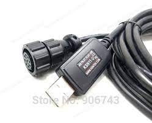
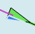
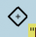
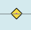
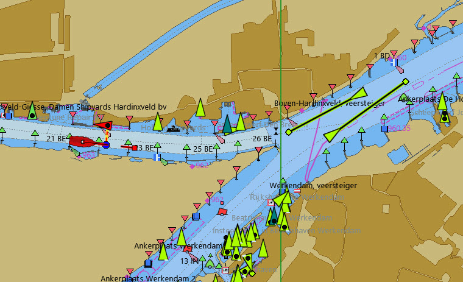
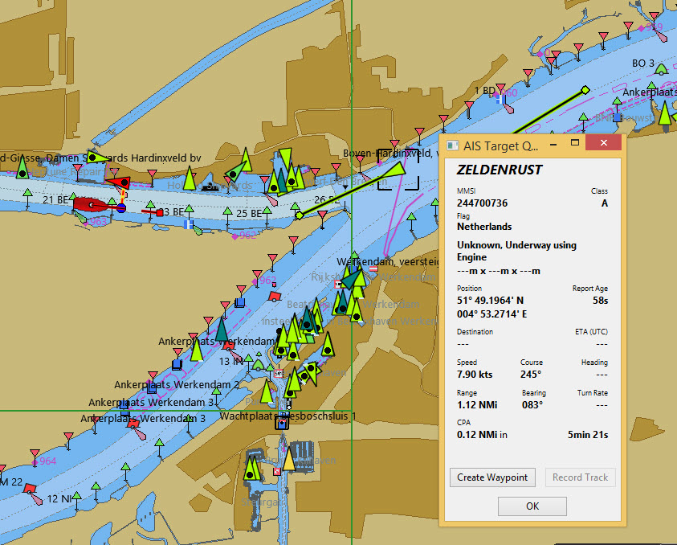

AIS

"AIS Lotsenstecker auf USB" Kabel

Standard AIS Empfänger
|
OpenCPN AIS Einstellungen
Um eine optimale Leistung zu erzielen und um eine Überladung des Schirms zu vermeiden. sollten einige Einstellungen angepasst werden. Dies hilft uns, Fehlalarme zu reduzieren. |
Das AIS verbinden
Wir verbinden das AIS genauso wie ein GNSS. Die Standarddatenrate beträgt jedoch 38400 statt 4800 Baud. Einen Lotsenstecker zu verwenden ist sicherlich der einfachste Weg. Damit erhalten wir auch die GNSS-Daten (Kein Zusatz GNSS erforderlich).

AIS Ziel Informationen
Rechtsklick
Mit "Maus-über" sehen wir Namen, MMSI und Flaggenstaat des Schiffs

AIS-Zielabfrage… (Class A AIS)
Das uns interessierende Schiff wird mit einem unterbrochenen Rechteck hervorgehoben.

AIS-Zielabfrage… (Class B AIS)
Liste AIS-Ziele…
Interpretieren der AIS-Informationen
| AIS_Icon | Information | AIS_Icon | Information |
|---|---|---|---|
|
Ein aktiver AIS SART ist ein Notruf wie ein Mayday Radioruf. Mehr darüber sart. |
|
Die V-Form zeigt ein AIS-B Ziel an. Hafenschlepper oder Lotsenboote nutzen diese häufiger. Wir treffen sie auch bei kleinen Handelsschiffen, Fischer- und Freizeitbooten. |
Icon wird angezeigt, wenn ein AIS-SART-Gerät getested wird. |
|
Ziel ist Euro AIS Inland spezifikationskonform |
|
|
Flugzeug/Hubschrauber auf SAR Flug |
 |
Dieses Schiff hat die „Blaue Flagge“ gesetzt, sie ist Teil des europäischen Inland AIS Standards. Die "Blaue Flagge" zeigt auf Binnenwasserstrassen an, dass das Schiff eine "Stbd-Stbd" Begegnung anfordert. Dieses blaue Signal wird manuell vom Schiffsführer ein- und ausgeschaltet. |
|
Mögliche Gefahr |
 |
Aton, Navigationshilfe, zum Beispiel ein Leuchtturm oder Bojen mit AIS Sender. |
|
Keine Gefahr. Nicht identifiziert, keine Fahrtdaten empfangen. |
Aton, Hilfe zu Navigation, nicht auf Position. Beispielsweise eine abgedriftete Boje mit AIS. |
|
Keine Gefahr. Nicht identifiziert (Name aus zwischengespeicherten Daten) |
Virtuelles Aton, Virtuelle Hilfe zur Navigation, kein physischer Marker. Ist für eine Reihe von Situationen nützlich. Ein neues Wrack zum Beispiel. Weitere Erläuterungen |
||
|
Keine Gefahr. Identifiziert |
Virtual Aton, ausser Position. Tatsächlich gesehen, kann sich aber um einen Konfigurationsfehler handeln. (Alte Anzeige.) |
|
|
Ziel verloren |
|
AIS Basisstation |
|
Schiff ohne aktuelle Position. Letzte bekannte wird angezeigt. |
Diese Ziele werden nur gezeigt, wenn DSC , GPSGate, RADAR oder APRS Meldungen über einen Multiplexer in die AIS Daten eingefügt werden. Einzelheiten weiter unten. |
|
|
Schiff ohne Führung |
 |
DSC Stelle. Nur die DSC-Nachricht empfangen. Die Position enthält nur Grad und Minuten für Breiten- und Längengrad. |
Schiff eingeschränkt manöverfähig. |
|
DSC Stelle. DSC und DSE Meldung. Position mit Dezimalstellen der Minuten Längen- und Breitengrad. Sehr viel höhere Positionsgenauigkeit. |
|
|
Schiff durch Tiefgang eingeschränkt. |
|
DSC Stelle sendet Notsignal. Dies ist einem Mayday Ruf gleichzustellen. |
|
Schiff auf Grund. |
|
GpsGate Buddy Ziel. |
|
Schiff bei Fischfang. |
|
ARPA Ziel |
|
Hochgeschwindigkeits- und Bodeneffektfahrzeuge. Dazu gehören Hovercrafts, Hydrofoils oder Flugzeuge mit Bodeneffektnutzung. |
APRS Ziel |
|
|
Vor Anker oder festgemacht. Wird angezeigt wenn der "Navigationsstatus" "vor Anker" oder "festgemacht" lautet. Da dieser Wert von Hand gesetzt wird, gibt es keine Garantie, dass das stimmt… |
.. wie man hier bei diesem Beispiel sieht. Die schwarze Linie am gelben Kreis. Das zeigt uns, dass das Schiff nach Backbord dreht. Auch in der Verzögerung des Updates der Anzeige zu sehen. ROT - Rate of Turn (Winkelgeschwindigkeit) zeigt bei Rechtsklick die "AIS Ziel Abfrage" |


AIS Beispiele

Ein Schiff an der Kreuzung scheint den Kurz zu ändern, um in "unseren" Kanal einzufahren.
Rechtsklick

Das Schiff ist identifiziert.

'Zeldenrust' ist eine potentielle Gefahr und hat eine Warnung ausgelöst, die auf unseren in OpenCPN eingegebenen Einstellungen basiert.
Der COG Voranzeigepfeil ist auf drei Minuten gesetzt.
Die rote gestrichelte Verlängerung der COG Voranzeige erlaubt uns, die Zeit bis CPA abzuschätzen, falls wir die AIS-Ziel-Abfrage nicht direkt nutzen.
Die blauen Punkte zeigen uns die geschätzten Positionen bei CPA.
Die hervorgehobene gelbe Linie zeigt die Distanz bei CPA.

'Zeldenrust' hat weiter gedreht und wird auf Backbord passieren. CPA 48,5 m.


"Zeldenrust" hat passiert und ist klar.
Das Schiff bei "Neptune Repair" erscheint als potenzielle Gefahr, ist aber festgemacht.